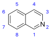

isoquinoline

Definition: Isoquinoline is a heterocyclic aromatic organic compound. It is a structural isomer of quinoline. Isoquinoline and quinoline are benzopyridines, which are composed of a benzene ring fused to a pyridine ring. In a broader sense, the term isoquinoline is used to make reference to isoquinoline derivatives. 1-Benzylisoquinoline is the structural backbone in naturally occurring alkaloids including papaverine. The isoquinoline ring in these natural compound derives from the aromatic amino acid tyrosine.
Source: Wikipedia
Wikipedia Page
Wikidata Page